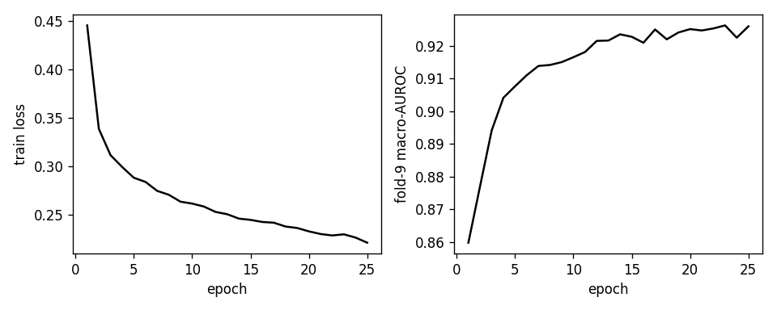
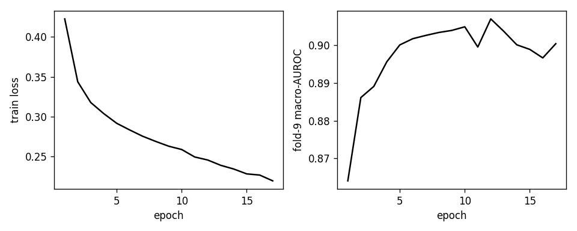
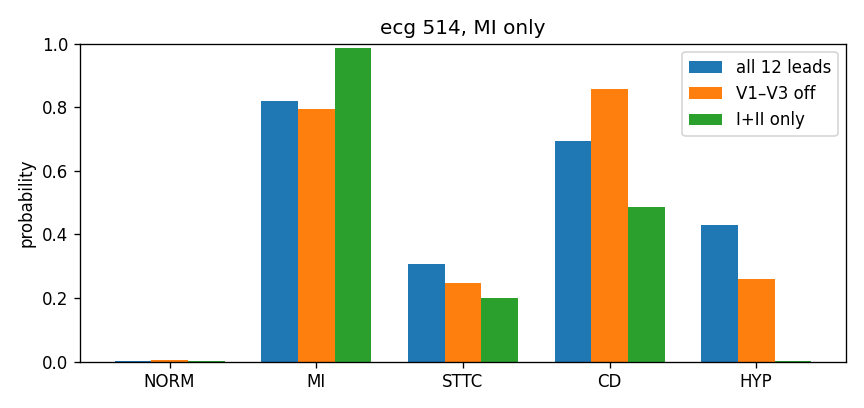
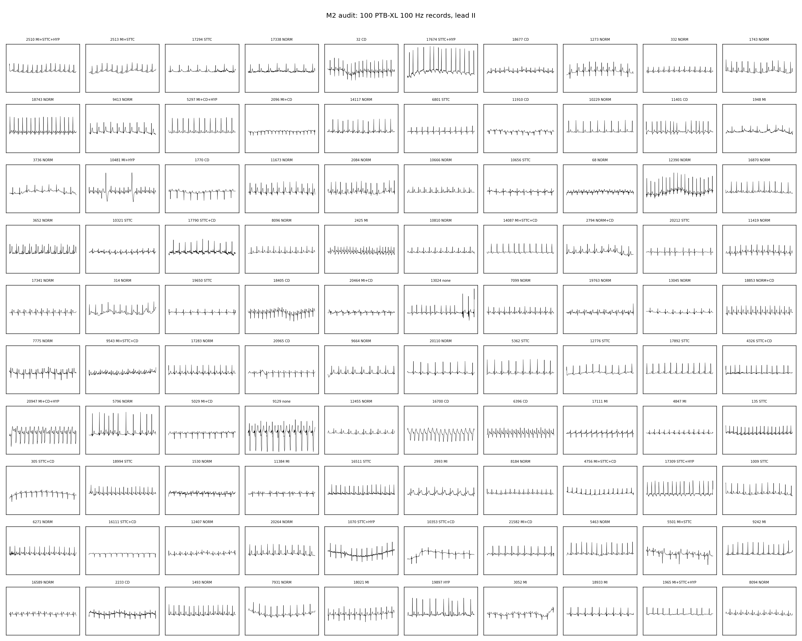

Twelve-lead ECGs, five labels, three ways to drop a lead
This is the course analysis: classify five diagnostic superclasses from a 10-second ECG, then score the same models when fixed sets of leads are removed. Both models were trained only on complete 12-lead records. The missing leads are applied later, at test time, by setting those channels to zero.
The comparison itself is done. A final writeup that puts these figures in a course document is not, and the code that produced them is still uncommitted on the branch al/m5-cnn.
Fold 10, macro-AUROC
21,799 records. Folds 1–8 train (17,418), fold 9 selects the checkpoint (2,183), fold 10 is scored once (2,198). A constant score equal to the training class rate has macro-AUROC 0.5, drawn as the red line. Macro-AUPRC for that same baseline is 0.254.
Both models clear the chance line by a wide margin when all twelve leads are present. Taking away V1, V2, and V3 costs about 0.05. Keeping only leads I and II costs about 0.20 for the CNN and about 0.25 for the Transformer. A published 1D ResNet on this same superclass task sits near 0.93, with millions of parameters. The clean CNN number, 0.920, is in that neighborhood because five coarse labels at 100 Hz are a reachable task for a small network.
Per class
AUROC asks whether a true case is ranked above a non-case. 0.5 is chance for every class. AUPRC asks whether the high scores are actually the rare cases. Its useless floor is the class rate, not 0.5. On the test fold those rates are about NORM 0.44, MI 0.25, STTC 0.24, CD 0.23, HYP 0.12. HYP can show an AUROC near 0.89 and still be the fragile class once precision and recall are the measure.
| CNN | Transformer | |||||
|---|---|---|---|---|---|---|
| Class | All 12 | V1–V3 off | I+II | All 12 | V1–V3 off | I+II |
| NORM | 0.944 | 0.911 | 0.765 | 0.925 | 0.876 | 0.683 |
| MI | 0.921 | 0.836 | 0.571 | 0.883 | 0.813 | 0.664 |
| STTC | 0.929 | 0.915 | 0.806 | 0.918 | 0.884 | 0.553 |
| CD | 0.913 | 0.840 | 0.797 | 0.858 | 0.769 | 0.650 |
| HYP | 0.891 | 0.874 | 0.665 | 0.892 | 0.844 | 0.655 |
| CNN | Transformer | |||||
|---|---|---|---|---|---|---|
| Class | All 12 | V1–V3 off | I+II | All 12 | V1–V3 off | I+II |
| NORM | 0.923 | 0.872 | 0.625 | 0.897 | 0.827 | 0.594 |
| MI | 0.821 | 0.678 | 0.334 | 0.757 | 0.626 | 0.437 |
| STTC | 0.810 | 0.785 | 0.572 | 0.777 | 0.698 | 0.276 |
| CD | 0.811 | 0.679 | 0.605 | 0.747 | 0.537 | 0.377 |
| HYP | 0.652 | 0.601 | 0.204 | 0.635 | 0.520 | 0.205 |
Color follows the number, from green when the score is high toward red when it is near chance. For AUPRC, red means the score is near the class rate. MI AUPRC of 0.334 on I and II only, against a 0.25 base rate, is a weak result even though the cell is not zero.
Removing the three precordial leads hits MI and conduction disturbance and leaves NORM, STTC, and HYP nearly where they were. Restricting the ECG to I and II hits every class. For the CNN, MI ranking almost disappears (AUROC 0.571). For the Transformer, STTC is the class that falls apart (AUROC 0.553, AUPRC 0.276). The CNN is ahead on every macro. It is not ahead on every cell: under I and II only, Transformer MI AUROC is 0.664 and CNN MI AUROC is 0.571.
These gaps are one training seed, with no bootstrap interval. A clean-lead difference of 0.024 macro-AUROC is a single run.
Training
Both models use unweighted binary cross-entropy with logits, Adam at learning rate 0.001, batch size 128, and a fixed seed. The checkpoint is the epoch with the highest fold-9 macro-AUROC. Fold 10 is not used to pick it. The CNN ran the full 25 epochs and kept epoch 23, where fold-9 macro-AUROC was 0.926. The Transformer stopped at epoch 17 and kept epoch 12, where fold-9 macro-AUROC was 0.907.


One ECG
The demo record is fold-10 ecg_id 514. The rule that picked it was deliberate: the first test record labeled only as MI whose clean MI probability is at least 0.8. The label is MI and nothing else. The clean probabilities still put substantial mass on conduction disturbance (0.69) and hypertrophy (0.43).

What the recordings look like
Before any model, 100 records at 100 Hz were checked against the official folds. Patient IDs do not cross train, validation, and test. The grid is lead II for that audit set, with the superclass labels on each panel. Some traces carry more than one label.

How small the models are
Three 1D convolutions, kernel size 7, widths 32, 64, and 128, each followed by a ReLU. Two pooling stages shrink the 1,000 samples, then a global average and a linear layer produce five logits. No residual blocks, no batch norm. 75,237 parameters.
The 10 seconds are cut into 125 patches of 8 samples, which is 80 ms at 100 Hz. Each patch mixes all 12 leads into one token. Two encoder layers, width 64, four heads, then a mean over time and a linear layer. No lead embeddings, no pretraining, no reconstruction head. 81,477 parameters.
Calling the second model an ECG Transformer overstates it. It is a small supervised patch encoder. It uses the same 100 Hz packed signals as the CNN. The 500 Hz files were never unpacked. Age, sex, and patient id are not inputs.
A zeroed lead is a flat line at the training mean, because the signals were already z-scored. The models never saw a missing lead during training, and the stored lead mask is all ones. The table is what a clean-trained network does when some channels become that flat line. Leads III, aVR, aVL, and aVF are linear functions of I and II in the original millivolt recording. After per-lead scaling, that algebra is not what the network sees, so a mild I+II result would not have been evidence of Einthoven reconstruction. The I+II result here is not mild.
Where the work stands
| Piece | State |
|---|---|
| Packed corpus, official split, train-only scaling | Done |
| Chance baseline, macro-AUROC 0.5 | Done |
| CNN and Transformer, fold-9 selection, fold-10 score | Done |
| Three-condition table for both models | Done |
| Single-ECG demo | Done |
| Tests | 37 passing |
| Course writeup that uses these figures | Not written |
| This work committed | Not yet |
The paper version of the project was left shut on purpose. It would need a published-scale ResNet on this split, a second Transformer trained with the same lead dropout and no reconstruction head, masked-precordial pretraining on extra unlabeled ECGs, bootstrap intervals, and an external dataset. None of that was run. These models do not show that pretraining improves robustness, because there was no pretraining.
Re-running the CNN scoring script overwrites figures/missing_lead_table.json and drops the Transformer block. The numbers above match the combined file as it stands now.